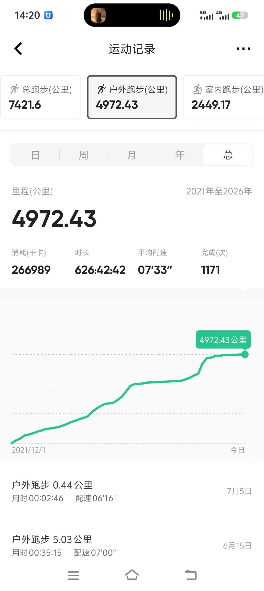

从0到5000公里：我的户外跑步五年复盘

昨晚19:05，锦山镇中心卫生院附近，微风拂面。我看着手表上显示的累计里程——4972.43公里，心中五味杂陈。这不仅是数字，更是1171次与自己的对话。 自2021年12月1日踏上这条跑道，我用626小时42分42秒的坚持，燃烧了266989千卡的热量。从最初的0.44公里气喘吁吁，到如今的5.03公里从容不迫，配速从06'16"慢慢稳定在07'00"左右。 这近5000公里，是孤独的旅程，也是成长的轨迹。每一步都算数，每一公里都见证了凌晨的街道和黄昏的晚霞。跑步教会我的，不仅是体力的提升，更是面对生活起伏的韧性。 有人说跑步伤膝盖，但我相信科学的训练。保持7分半的配速，既不过度消耗，又能享受过程。这或许就是最适合普通人的运动节奏——不追求速度，只追求长久。 未来的路还很长，下一个5000公里，我将继续用脚步丈量世界。如果你也喜欢跑步，欢迎加入我们。记住，重要的不是跑得多快，而是你一直在路上。
想拥有同款轨迹？
微信：278715464
扫码或搜索微信号，备注需求即可下单
⚠️ 温馨提示：本服务仅限个人娱乐、纪念用途，严禁用于学校体测、企业考核、赛事资格等正式场景。请遵守各平台用户协议，理性运动，健康生活。